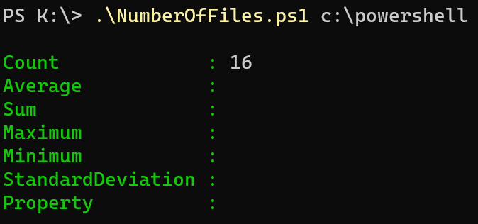
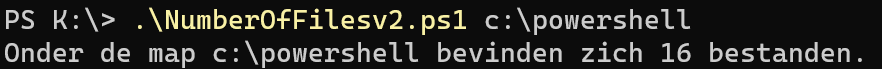
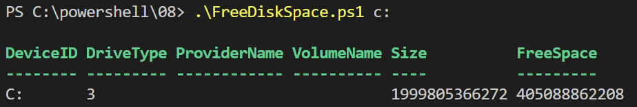
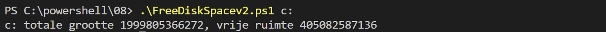
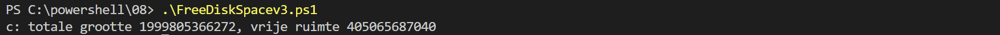
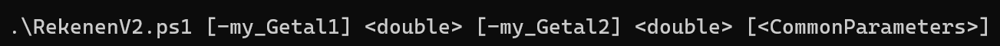
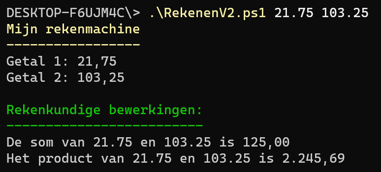
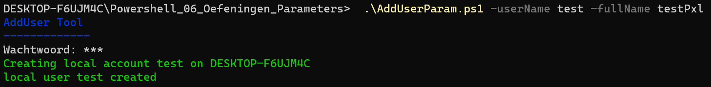

1. Aantal bestanden
1.1 NumberOfFiles.ps1
Maak scripts/NumberOfFiles.ps1. Het script:
- ontvangt een directory als eerste positionele argument;
- controleert dat het pad een bestaande map is;
- telt recursief alle bestanden;
- toont het volledige resultaat van
Measure-Object.
Voorbeeld:
./scripts/NumberOfFiles.ps1 C:\powershell
1.2 NumberOfFilesv2.ps1
Maak scripts/NumberOfFilesv2.ps1 met dezelfde parameter en telling, maar toon één leesbare zin met map en aantal.

2. Vrije schijfruimte
Gebruik voor de volgende scripts Get-CimInstance -ClassName CIM_LogicalDisk en beperk het resultaat tot lokale schijven met DriveType 3.
2.1 FreeDiskSpace.ps1
Maak scripts/FreeDiskSpace.ps1:
driveLetteris een verplicht positioneel argument zoalsC:;- valideer de vorm van de stationsletter;
- toon het gevonden CIM-object.

2.2 FreeDiskSpacev2.ps1
Maak versie 2. Toon één zin met stationsletter, totale grootte en vrije ruimte in bytes.

2.3 FreeDiskSpacev3.ps1
Maak versie 3. Wanneer de gebruiker geen stationsletter meegeeft, gebruikt het script automatisch C:.

2.4 FreeDiskSpacev4.ps1
Maak versie 4 met:
driveLetter, standaardC:;dataUnit, standaardTB;- alleen
MB,GBenTBals geldige eenheden; - totale en vrije ruimte afgerond op twee decimalen;
- een duidelijke fout wanneer de schijf niet bestaat.
Test alle eenheden, de standaardwaarden en minstens één ongeldige eenheid.

3. Verplichte numerieke parameters
3.1 RekenenV2.ps1
Pas het script uit lab 05 aan:
my_Getal1enmy_Getal2zijn verplichtedouble-parameters;- beide kunnen positioneel of benoemd worden gebruikt;
- toon som en product met twee decimalen;
- gebruik geen
Read-Hostmeer.
Controleer of de helpsyntax overeenkomt met:

Test onder andere:
./scripts/RekenenV2.ps1 21.75 103.25
./scripts/RekenenV2.ps1 -my_Getal1 21.75 -my_Getal2 103.25
4. Verplichte back-upparameters
LET OP: Dit script leest en comprimeert bestanden. Test alleen met
C:\pxl_dataenC:\backupsop een labsysteem. Controleer de ZIP en verwijder de testdata na beoordeling.
4.1 MakeBackupV2.ps1
Pas MakeBackup.ps1 aan zodat deze drie benoemde parameters verplicht zijn:
source_Folder;destination_Folder;backup_Name.
Het script valideert beide mappen, maakt yyyyMMddHHmmss_naam.zip en toont het resultaat. Gebruik geen Read-Host.


5. Parameters voor een lokale gebruiker
LET OP: Deze extra oefening vereist administratorrechten en maakt een lokale Windows-gebruiker. Gebruik alleen een labsysteem, voeg de gebruiker niet toe aan Administrators, controleer met
Get-LocalUseren verwijder de testgebruiker nadien metRemove-LocalUser.
5.1 AddUserParam.ps1
Pas AddUser.ps1 aan:
userNameis een verplichte tekenreeksparameter;fullNameis een optionele tekenreeksparameter;- het wachtwoord wordt interactief als
SecureStringgevraagd; - fouten worden afgehandeld;
- er is geen parameter of variabele met een leesbaar wachtwoord.


Eindcontrole
- Alle negen scripts staan onder
scripts/met exact de gevraagde namen. - Iedere parameter heeft een passend datatype, positie, standaardwaarde en validatie.
-
Get-Helptoont bruikbare syntax en voorbeelden. - Geldige en ongeldige invoer zijn getest en beschreven in
answers.md. - De back-up is gecontroleerd en testbestanden zijn opgeruimd.
- De lokale testgebruiker is na controle verwijderd.
- Alle scripts parsen zonder syntaxfouten.
- Je hebt je wijzigingen gecommit en gepusht.